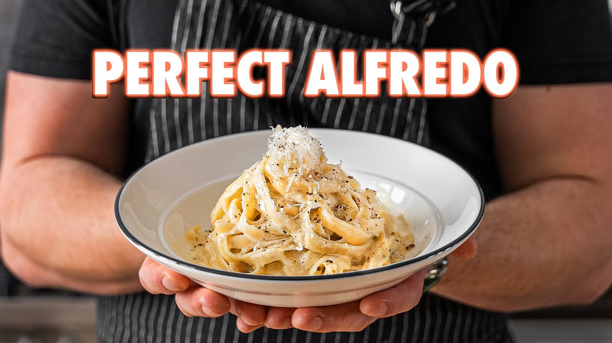

Fettuccine Alfredo

Fettuccine Alfredo is obviously better when it’s homemade. But... is there a best of all-time version? Turns out... there are multiple...
Ingredients
Fettuccine al Burro
- 14 oz (400g) Fettuccine
- 1/2 cup (115g) unsalted butter, softened
- 2 cupts (250g) grated parmigiano reggiano
- Salt and pepper to taste
American Fettuccine Alfredo
- 14 oz (400g) Fettuccine
- 1/2 cup unsalted butter
- 1 1/4 cup heavy whipping cream
- 5 cloves garlic, finely minced
- 2 tsp finely chopped thyme
- Salt and pepper to taste
- 2 cups parmigiano reggiano
Instructions
Fettuccine al Burro
- Place fettuccine in a pot of boiling water that's been seasoned generously with salt. Cook according to package instructions or until done
- In a large bowl, add softened unsalted butter and season with pepper
- Reserver 3/4 cup of pasta water. Drain the pasta
- Immediately add pasta to the large bowl and toss with the butter vigorously
- Once butter is melted, add in grated parmigiano reggiano. Toss until combined using pasta water as needed to melt the cheeese. Season with salt and pepper
- Serve in a bowl topped with additional parmigiano reggiano
American Fettuccine Alfredo
- Place fettuccine in a pot of obiling water that's been seasoned generously with salt. Cook according to package instructions or until done
- In a large pan, add heavy whipping cream and unsalted butter set to medium heat. Constantly stir the pan until all the butter has melted.
- Increase the heat slightly and bring to a gentle simmer. Simmer, stirring occasionally, for 3-4 minutes or until lightly thickened.
- Cut off the heat and add in parmigiano reggiano, chopped thyme, and finely chopped garlic. Vigorously stir together until thoroughly combined. Season to taste with salt and pepper
- Reverse 3/4 cup of pasta water. Drain the pasta
- Add pasta to the alfredo sauce. Toss and using pasta water as needed to fully emulsify
- Place in a bowl. Top with grated parmigiano reggiano and a crack of black peppercorn before serving